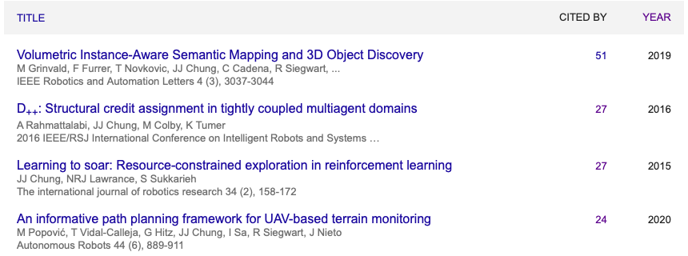
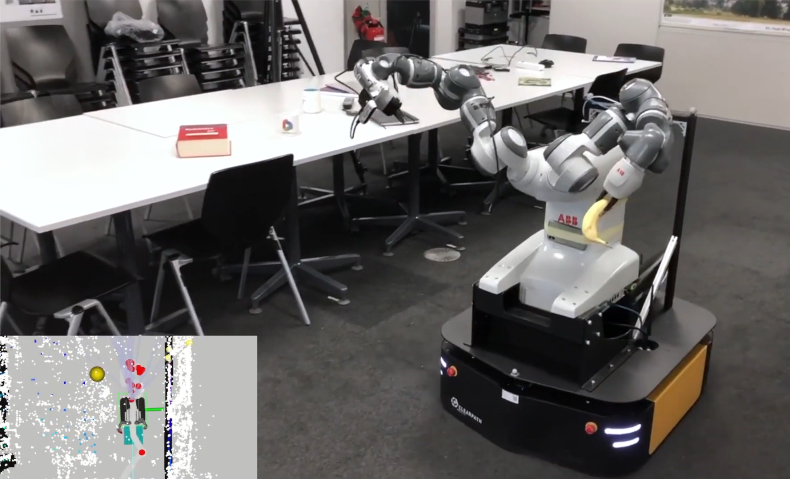
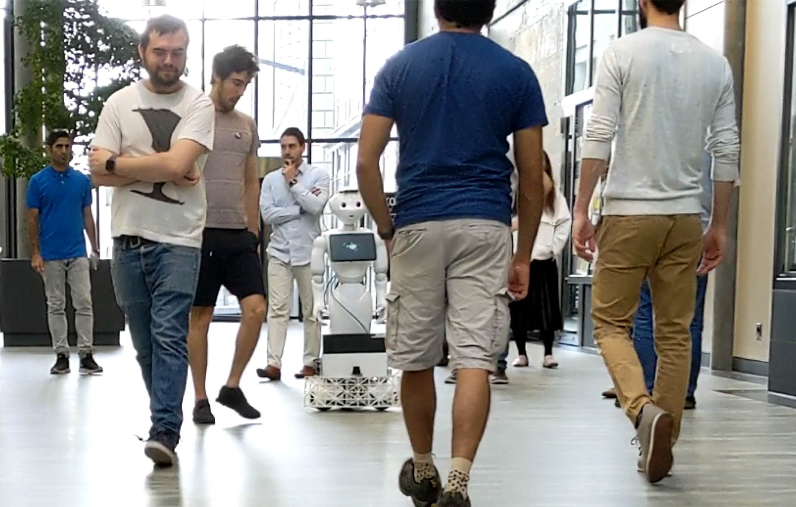
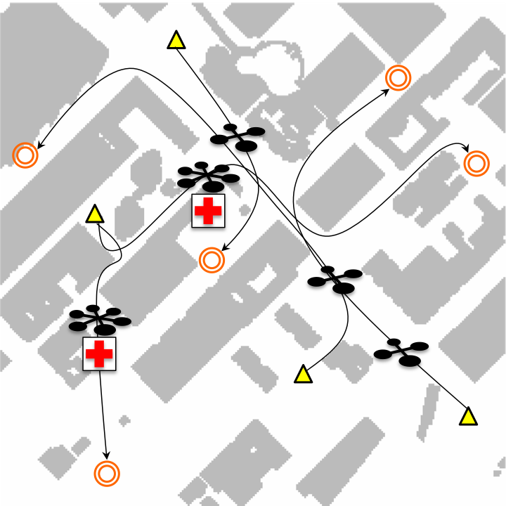
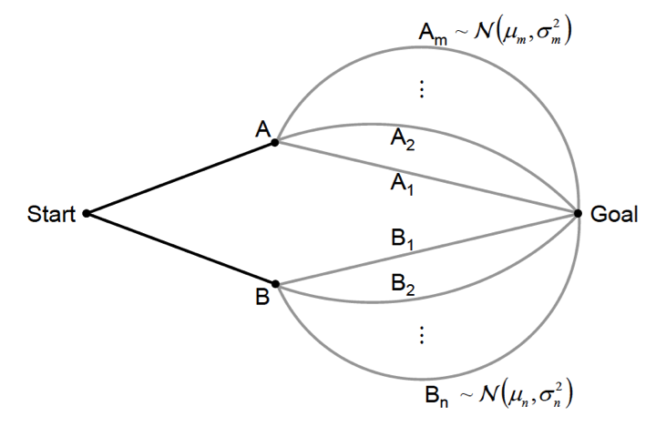
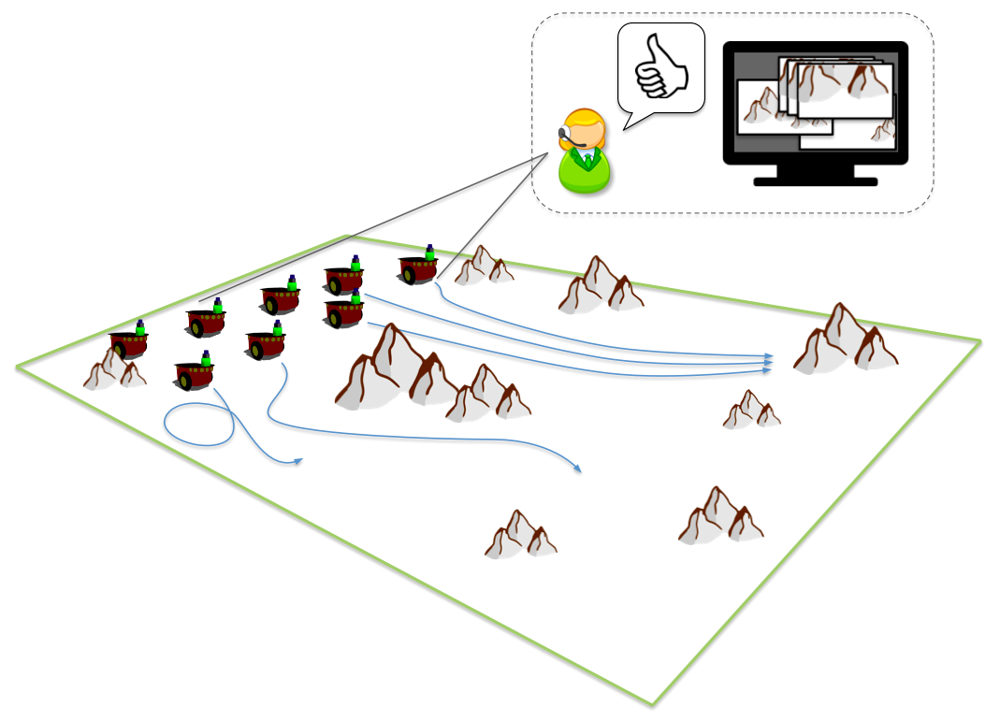
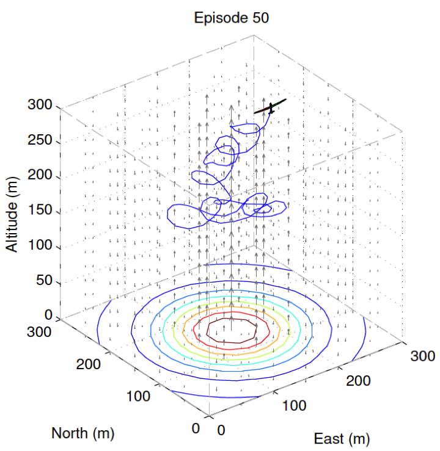
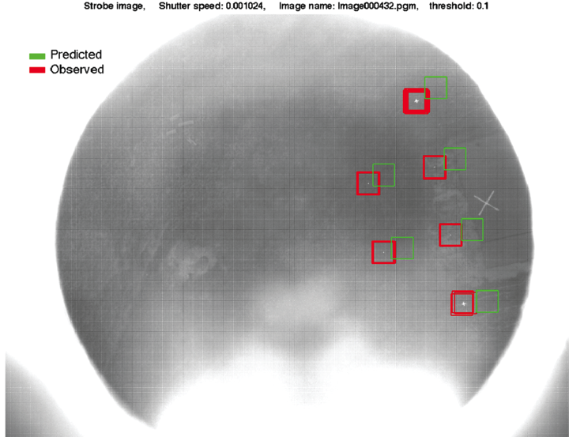

Jen Jen Chung
I am an Associate Professor in the school of Information Technology and Electrical Engineering at The University of Queensland. I'm just starting up my lab so watch this space for new developments and opportunities in the coming months!
Previously, I was a senior researcher at the Autonmous Systems Lab in ETH Zürich, I was a postdoc at the Collaborative Robotics and Intelligent Systems Institute in Oregon State University and prior to all of that I completed my PhD at the Australian Centre for Field Robotics in the University of Sydney*.
See below for the latest news and a list of my current and past research projects.
News
2022
- CONGRATULATIONS to our very latest Dr. Michel Breyer! ASL's expert in robot grasping, check out his work on VGN and active grasping
- At ISRR we asked the question: "How do we get robots to understand the world the way we do?" Check out our blue-sky paper here!
- CONGRATULATIONS to our most newly minted Dr. Rik Bähnemann, Dr. Daniel Dugas, and Dr. Florian Achermann! Extremely well done and well deserved!
- Our TRO paper on predicting multi-robot communication connectivity for active planning is now available in Early Access! You can also check it out here!
- IROS papers, videos and code now available on active grasping, world-models for vision-only navigation and flow-based crowd navigation.
- New papers now available!
- How to detect landmines from a drone (also including solutions for microsecond time synchronization!) [to the paper]
- Fast generation of keypoint annotation datasets [to the paper] [try it yourself]
- Thanks Ascento for inviting me to give a keynote at your women*'s evening!
- Harmony integration week: Two locations, two robots, one week to kick off our integration efforts!
2021
- Discovered today that the top four most cited papers on my Google Scholar page are all first-authored by women!

Go and find out more about each of my amazing co-authors: Margarita Grinvald, Aida Rahmattalabi, Marija Popović
- Harmony has a brand new website complete with more information on the project, the partners as well as the latest news and publications.
- Check out the great collaboration between our MAV and MoMa team in our Amazon Research Award project on Omnidirectional Aerial Manipulation! Also find out about the spin off student focus project Griffin who built, tested and flew their own aerial manipulation platform in just 8 months!
- If you hate having to maually check the quality of your stereo camera calibration, check out our paper CalQNet which will be presented at IV2021!
- We have six papers accepted to ICRA (including one accepted to RAL)! Links to papers and code in the publications tab.
- We're kicking off a wonderful new EU H2020 project on mobile manipulation robots for assistive healthcare! Follow the project on Twitter @eu_harmony
- Our paper on Distributed Coverage Control using a Multi-robot System was accepted to RAL!
Project Harmony is off to a fantastic start with our official Kick-off meeting today! So wonderful we could all come together from all over Europe (and the world!) #ProjectHarmony #Robotics #research @ASL_ETHZ @ETH_en @rsiegwart pic.twitter.com/bL4rCFV6Uh
— Harmony EU project (@eu_harmony) February 2, 2021
2020
- Our papers on real-tme 6 DOF grasping in clutter, optical-thermal image alignment and reinforcement learning for visual-inertial sensor calibration will be presented at CORL 2020! Check out the papers available now in the publications tab.
- Our IROS on demand video presentations are now available online!
- Our papers on interaction-aware motion planning, learning multi-robot communication policies and autonomous racing will be presented at IROS 2020! Check out the pre-prints available in the publications tab.
- Check out our ICRA video presentation for Informative path planning for active mapping under localization uncertainty
- Our papers on localisation-aware informative path planning and predicting communication connectivity for cooperative localisation will be presented at ICRA 2020!
- Our JAAMAS paper on The impact of agent definitions and interactions on multiagent learning for coordination in traffic management domains is now available online. Code for the multiagent learning experiments is also available [here]
2019
- Check out our 2019 ASL Christmas video! (Short version and full version below)
- Womenplusplus are organising Hack'n'Lead, Switzerland's first women-friendly hack-a-thon! They're also hosting a series of workshops leading up to the event that you can sign up for [here], with plenty of online material that you can try out for yourself.
- Our paper on "Volumetric instance-aware semantic mapping and 3D object discovery" was nominated for the IROS best paper award on Cognitive Robotics! Check out the paper [here].
- My lecture on "Learning to Coordinate" is now available on the Multi-Robot Systems Summer School website. Follow the [link] to see the recording and slides.
- Our 2nd Workshop on Informative Path Planning and Adaptive Sampling (WIPPAS 2019) will be organized in conjunction with RSS 2019. The workshop will be held on Saturday, June 22, 2019. See you there!
2018
- Check out our Workshop on Informative Path Planning and Adaptive Sampling (WIPPAS 2018) to be organized in conjunction with ICRA 2018. The workshop will be held on Monday, May 21, 2019. See you there!
- Our Special Issue on Online Decision-Making in Multi-Robot Coordination is the April 2018 Issue of Autonomous Robots.
Current and Past Projects
ASL, ETH Zürich
Robotic Mobile ManipulationCurrent robotic automation solutions typically offer 'islands of automation' where either mobility or manipulation is dealt with in isolation. Our research in this area aims to fill this gap in knowledge on combining both robotic mobility and manipulation modalities in complex, human-centred environments. Mobile manipulation tasks require robots that can interact with the world across a wide operational spectrum, from the (sub)millimetre precision required for fine manipulation to navigating across building- and campus-scale spaces. This motivates a holistic representation of the environment that facilitates the tight integration of socially aware planning, perception and control, and allows cognitive elements such as learning, reasoning and adaptation of actions for natural interaction.
"/> Safe Robot Navigation in Dense CrowdsNavigating through human crowds is a tough challenge for a robot. Crowds can cause severe sensor occlusions and often don't leave much free space for the robot to move in, leading to what's known as the 'freezing robot problem'. As part of the European Commisssion H2020 CrowdBot Project, we are developing navigation and motion plannng algorithms that allow the robot to work with the flow of the crowd to get to its destination. We work on mapping, localisation, prediction, motion and interaction planning to help the robot answer four key questions for successful robot crowd navigation:
1. Where am I?
2. Who's around me?
3. Where am I going?
4. How should I get there?
"/>CoRIS, Oregon State University
UAV Traffic ManagementUAV traffic management in urban airspaces can be formulated as a problem of routing autonomously guided robots using cost space manipulation to induce safe trajectories in the work space. Each UAV does not explicitly coordinate with other vehicles in the airspace. Instead, they each execute their own individual internal cost-based planner to travel between locations. We are developing a high-level UAV traffic management (UTM) system that can dynamically adapt the cost space to reduce the number of conflict incidents in the airspace without needing explicit knowledge of the internal planners of each UAV. Our decentralized and distributed system of high-level traffic controllers each learn appropriate costing strategies via a neuro-evolutionary algorithm. The policies learned by our algorithm demonstrated a reduction in the total number of conflict incidents experienced in the airspace while maintaining throughput performance. Current research is looking at methods to account for traffic heterogeneity in the system.
"/> Risk Aware Graph SearchWe are investigating novel approaches to searching a graph with probabilistic edge costs, namely, by incorporating available uncertainty information into the graph search. Our proposed risk aware graph search (RAGS) method consists of two major steps, the first is to perform an initial search across the graph to find the set of non-dominated paths. Following this, we perform risk-aware planning during path execution as information of the true neighboring edge costs become available. Initial results in a graph search domain have demonstrated superior performance when compared to A*, D* and a greedy approach.
"/> Structural Credit Assignment in Multiagent Policy LearningAutonomous multi-robot teams can be used in complex tasks to improve performance in terms of both speed and effectiveness. However, use of multi-robot systems presents additional challenges. Specifically, in domains where the robots' actions are coupled, coordinating multiple robots to achieve cooperative behavior at the group level is difficult. Reward shaping can greatly benefit policy learning in multi-robot tasks and we are investigating various reward frameworks based on the idea of counterfactuals to tackle the structural credit assignment problem in these coupled domains.
"/>ACFR, University of Sydney
Learning to Soar: Resource-Constrained ExplorationIn 2014 I received my Ph.D., which I completed at the Australian Centre for Field Robotics at the University of Sydney. My research focused on the development of information-based exploration strategies that can be applied within reinforcement learning frameworks to characterise the exploration-exploitation trade-off within resource-constrained learning missions. The application of interest was an unpowered aerial glider learning to soar in a wind energy field.
"/> Locust Swarm TrackingThe goal of this project was to gather intra-swarm locust motion data for biologists at the University of Sydney to study the effects of inter-locust interactions on the overall swarm motion. The Australian Centre for Field Robotics developed a system to collect this data consisting of micro retro-reflectors (to be attached to the insects) and a UAV equipped with a strobe beacon to autonomously fly loops over the swarm to track and monitor insect locations in real-time. Proof-of-concept was demonstrated in 2011.
"/>* Going even further back, I completed my HSC at Hurlstone Agricultural High School after graduating from Sackville Street Primary School.